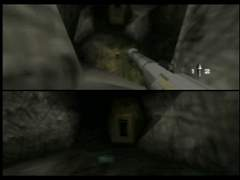
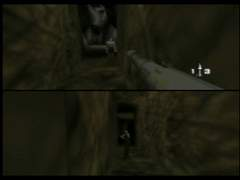
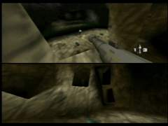
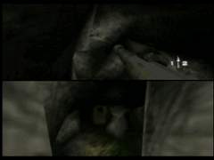
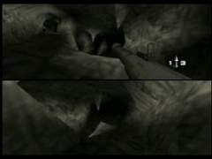
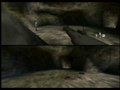

|
.
| Goldeneye
: Caves |
Taille
- Standard
lorsque l'on connait le Niveau par Coeur, Caves est une Bonne Alternative
à Caverns. A part une Salle, toutes les Voies menent à
des endroits précis, sans trop perdre les joueurs. Idéal
! Décor - Varié, allant du Noir au Gris, Vert, et Bruns, c'est correct. C'est une Caverne assez variée. Chaque Salle a sa propre Teinte, on la reconnait facilement. Un bon Niveau graphiquement. Armes - Tout y passe. Par contre, les Mines sont vite identifiables vu leur couleur Grise ! Tout ce qui est Explosif est superbe dans Caves ! Camping - Y a l'Endroit sous le Passage tout Noir, mais on y va pas trop. Le Bout du Virage avec la Stalactite est subtil, pour peu que l'on ait un Personnage Noir... |
 |
 |
 |
Le
Joueur du Haut snipe au Lance Roquettes le Joueur du Bas. C'est un excellent
endroit pour innonder les autres de Roquettes ou Grenades. |
Le
Couloir Brun est un passage souvent utilisé, alors attention
à bien viser, c'est un Point vite gagné ! |
L'autre
Grande Salle, avec les 3 Balcons, est bien marrante. On peut descendre
des 2 Premiers, et joyeusement Shooter ceux plus bas. |
 |
 |
 |
On
ne le voit pas trop, mais on peut surpendre un Sniper en tirant depuis
le Haut de l'escalier de la Grande Salle. |
Le
Virage de la Stalactite est un bon endroit, difficile à garder.
On peut se planquer dans le Noir au fond... |
La
Salle Banale du Niveau, plus loin après le Poste du Gilet. Rien
à dire sur cette Salle. |